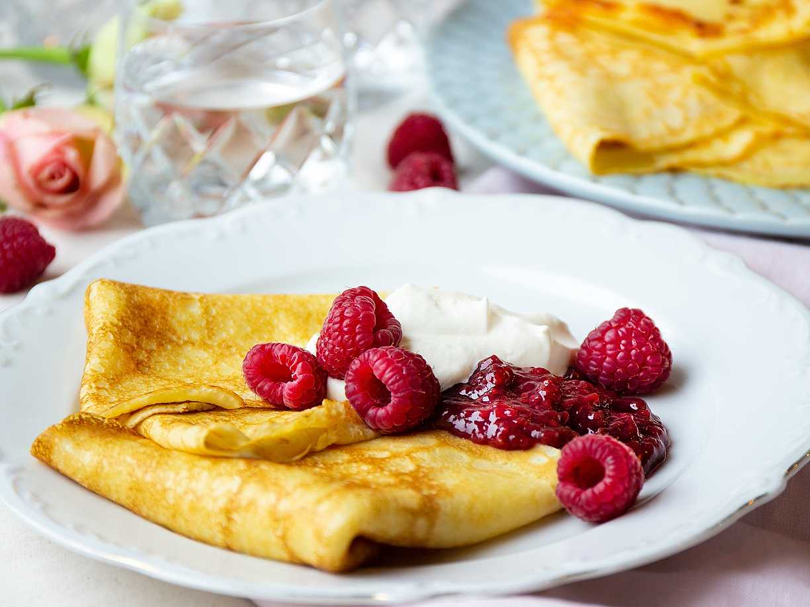

Pannkaka

Beskrivning
Pannkaka är traditionell svensk husmanskost som serveras både som frukost, lunch eller som dessert efter våra traditionella torsdagsärter. Pannkakor har i alla tider varit barnens favorit.
Ingridienser
- 3 dl vetemjöl
- 3 ägg
- 6dl mjölk
- 2 msk smör
- 0,5 tsk salt
- 1 tsk socker
- smör, till stekning
Steg
- Vispa ihop mjöl, ägg och hälften av mjölken till en smidig smet utan klumpar. Det går bra att använda elvisp när du gör pannkakssmet.
- Tillsätt resten av mjölken, smält smör, salt och socker. Låt svälla några minuter.
- Grädda pannkakorna i het stekpanna. Du behöver bara smöra första laggen, sedan släpper pannkakorna av sig själva. När ytan blivit matt och smeten stelnat är det dags att vända pannkakan. Färgen ska vara vackert guldbrun. Använd sparsamt med smet till varje pannkaka så att de blir tunna och får en frasig spetskant.
- Lägg pannkakorna undan för undan på ett varmt serveringsfat som lämpligen placeras över en kastrull med hett vatten. Servera med sylt och grädde.